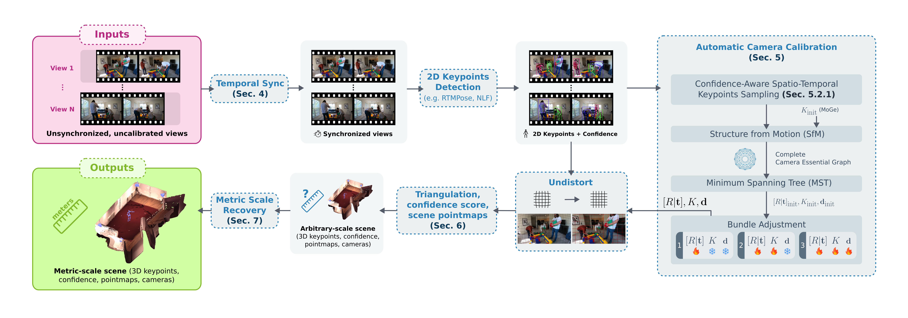

Markerless multiview motion capture remains challenging due to the need for precise camera calibration, limiting its accessibility for non-experts. Existing calibration-free approaches avoid manual calibration but suffer from high computational cost and reduced reconstruction accuracy.
We present Kineo, a fully automatic, calibration-free pipeline for markerless motion capture from videos captured by unsynchronized, uncalibrated, consumer-grade RGB cameras. Kineo fully leverages 2D keypoint from off-the-shelf detectors to simultaneously calibrate cameras, estimate Brown-Conrady distortion coefficients, and reconstruct 3D keypoints and dense scene point maps at metric scale. A novel confidence-driven keypoint sampling strategy, combined with graph-based optimization, ensures a fixed computational cost for the calibration step, independent of sequence duration. Additionally, we introduce the pairwise reprojection consensus score, which quantifies the reliability of 3D estimations for downstream tasks.
Evaluations on EgoHumans and Human3.6M demonstrate substantial improvements over prior calibration-free methods. Compared to previous state-of-the-art approaches, Kineo reduces camera translation error by approximately 81-84%, camera angular error by 86-92%, and world mean-per-joint error (W-MPJPE) by 82-91%. When provided with ground-truth intrinsics, Kineo's performance further improves, matching methods that use ground-truth extrinsics. We further demonstrate Kineo's real-world applicability in both offline and realtime scenarios. In an offline setting, we capture craftsmen gestures at Guédelon Castle, highlighting Kineo's potential for scalable, accurate motion capture in complex, uncontrolled environments and its utility in preserving intangible cultural heritage. In a realtime setting, Kineo employs a two-step approach, with calibration followed by live human reconstruction, showcasing its capability for interactive 3D motion capture.

Interactive result on one sequence from the Human3.6M dataset (S11 Greeting). The result are raw with no post-processing (filtering, smoothing, etc.).
EgoHumans - Fencing
EgoHumans - Tagging
Human3.6M - Phoning
Human3.6M - Walking Dog
Guédelon - Stonemason
Guédelon - Carpenter
Qualitative comparison between HSfM (red) and Kineo (blue) on the S11_Eating 1 sequence from the Human3.6M dataset (HSfM best-performing sequence). Ground truth camera and skeletons are shown in black. Visualization is scale-aligned.
| Method | Human Metrics | Parameters | ||||
|---|---|---|---|---|---|---|
| W-MPJPE ↓ | PA-MPJPE ↓ | [R|t] | K | d | ||
| EgoHumans | UnCaliPose | 3.51 | 0.13 | Est. | GT | GT |
| HSfM | 1.04 | 0.05 | Est. | Est. | - | |
| HAMSt3R | 3.80 | 0.14 | Est. | Est. | - | |
| Kineo | 0.16 | 0.02 | Est. | GT | GT | |
| Kineo | 0.41 | 0.03 | Est. | Est. | - | |
| Kineo | 0.17 | 0.02 | Est. | Est. | Est. | |
| Human3.6M | Iskakov et al. | 0.02 | - | GT | GT | GT |
| AdaFuse | 0.02 | - | GT | GT | GT | |
| Hewitt et al. | 0.03 | - | GT | GT | - | |
| HSfM | 0.47 | 0.05 | Est. | Est. | - | |
| Kineo | 0.02 | 0.02 | Est. | GT | GT | |
| Kineo | 0.04 | 0.02 | Est. | Est. | - | |
| Kineo | 0.04 | 0.02 | Est. | Est. | Est. | |
Quantitative comparison of human pose estimation on EgoHumans and Human3.6M. Metrics include W-MPJPE (in meters) and PA-MPJPE (in meters). Camera parameters: GT = ground truth, Est. = estimated, - = omitted. Best and second-best calibration-free methods are highlighted.
| Method | Camera Metrics | Parameters | |||||||||
|---|---|---|---|---|---|---|---|---|---|---|---|
| TE ↓ | s-TE ↓ | AE ↓ | RRA@10 ↑ | CCA@10 ↑ | s-CCA@10 ↑ | FoV ↓ | [R|t] | K | d | ||
| EgoHumans | UnCaliPose | 2.63 | 2.63 | 60.90 | 0.28 | - | 0.33 | - | Est. | GT | GT |
| DUSt3R | - | 1.15 | 11.00 | 0.61 | - | 0.49 | - | Est. | Est. | - | |
| MASt3R | 4.97 | 0.92 | 10.42 | 0.61 | 0.06 | 0.65 | - | Est. | Est. | - | |
| HSfM | 2.09 | 0.75 | 9.35 | 0.72 | 0.32 | 0.75 | - | Est. | Est. | - | |
| HAMSt3R | 2.33 | 0.40 | 10.24 | 0.77 | 0.06 | 0.75 | - | Est. | Est. | - | |
| Kineo | 0.29 | 0.05 | 0.34 | 1.00 | 0.99 | 0.99 | 0.00 | Est. | GT | GT | |
| Kineo | 0.76 | 0.57 | 3.48 | 0.91 | 0.72 | 0.89 | 2.96 | Est. | Est. | - | |
| Kineo | 0.34 | 0.15 | 0.69 | 1.00 | 0.98 | 0.99 | 1.03 | Est. | Est. | Est. | |
| Human3.6M | HSfM | 0.83 | 0.33 | 6.44 | 0.95 | 0.46 | 0.95 | 36.97 | Est. | Est. | - |
| Kineo | 0.01 | 0.01 | 0.20 | 1.00 | 1.00 | 1.00 | 0.00 | Est. | GT | GT | |
| Kineo | 0.13 | 0.03 | 0.90 | 1.00 | 1.00 | 1.00 | 0.57 | Est. | Est. | - | |
| Kineo | 0.12 | 0.02 | 0.89 | 1.00 | 1.00 | 1.00 | 0.43 | Est. | Est. | Est. | |
Quantitative comparison of camera pose estimation on EgoHumans and Human3.6M. Metrics include translation error (TE, m), scale-aligned translation error (s-TE, m), angular error (AE, °), relative rotation accuracy (RRA), camera center accuracy (CCA), and scale-aligned CCA (s-CCA). Camera parameters: GT = ground truth, Est. = estimated, - = omitted. Best and second-best calibration-free methods are highlighted.
This work was supported by the Auvergne-Rhône-Alpes region as part of the PROMESS project. This work was granted access to the HPC resources of IDRIS under the allocation 2025-AD010614830 made by GENCI. We also express our gratitude to the Guédelon Castle for kindly welcoming us and permitting the captures that were essential to this study.
@article{javerliat2025kineo,
author = {Javerliat, Charles and Raimbaud, Pierre and Lavoué, Guillaume},
title = {Kineo: Calibration-Free Metric Motion Capture From Sparse RGB Cameras},
date = {2025},
}